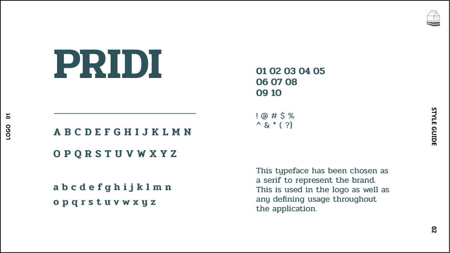

From the user research, specific personas were created to represent shoppers that would be using Stock’d. They include a mother with children, an employee of a grocery store who interacts with these users daily, and a young man who travels often and enjoys cooking. With these three varying personas, features could be created to eradicate pain points and goals for many different users. I referenced these personas often throughout the UX and visual design, especially while creating user stories.
-
is a clean interface that can be accessed on a phone, tablet, desktop, and even smartwatches. A convenient feature I found on this app was recommended items and a list of popular items to search through. None of these items were brand names, but general things such as “cheddar cheese”. The ability to share the lists with others requires specificity for certain items. Despite appearing clean, they misused a lot of elements that should be intuitive, making it confusing to use at times. After looking through reviews from actual users, it looked like a common issue was the updates for this app were often glitchy and inconsistent. Users will not return to services when they are known to be broken.
-
is a bit more refined in terms of user interface. Users can make unlimited lists and has features such as auto-categorization and voice input. You can share lists with anyone, even those without the application. Items do not have automatic prices as you must enter it on your own if you wish to. The items are also generic, without brands.
_ Define
The user stories were created to solve the most impending issues found from the research as well as important tasks that are needed to work through an application. These tasks range from seeing the stock of an item before arriving at a store to starting a shopping trip route. This step helps to keep the design straightforward without too many distractions and unnecessary features. It also kept the design on track for a minimum viable product to be produced. Getting the MVP released is one of the best forms of feedback to refine the product.
The user flows are then used to layout each task step by step. It is essentially the blueprint for the application and will be referenced in wireframing iteration. These pathways are not necessarily linear but are flows needed to accomplish user goals. Most importantly, my goal at this step is to make them as short and concise as possible in order to optimize the experience.

This is always the first place I begin in the ideation process. It allows me to put thoughts down on paper and create a domino effect for finding the exact direction for branding. I start out by summarizing the concept into a few words- Grocery App. I began writing down anything that came to mind about grocery stores and the entire experience.
After using the mind-mapping exercise to get my ideas out on paper, I was able to doodle them into a logo form. Even when they were absolute busts, I was still being productive in narrowing in on how I wanted this brand to be recognized.
_ Design
One of my favorite ways to round out the many ideas when creating a brand is something called a stylescape. I am putting together more than just photos for inspiration. The stylescape includes a freeform to display texture, typography, elements, colors, and photos. This is a more defining way to develop a brand identity.
The stylescape is a foundation for creating the design system that will be consistent through the product and brand. I chose a natural, earthy palette to compliment the primary colors of white and black.
The mark evolved from the logo to be used subtly throughout the application and brand. The list is wrapped around the milk carton to give it depth.

Without an exact idea of how I wanted to bring the goals and tasks to life, the easy and cheap option was to draw them out in a low fidelity format before turning it into a digital mockup. Again, I focused on having the fewest amount of screens and actions to complete tasks with a familiar interface.
The digital wireframes are blueprints for moving into high fidelity mockup designs and catching any inconsistencies. Before moving on to high fidelity, I had to clean up varying call-to-action buttons that were inconsistent throughout as well as too small for mobile touchpoints.
_ Iterate
The most important goal in developing the high fidelity mockups was adhering to best practices while creating a beautiful and delightful UI. In order to maintain brand mood, I referred back to the stylescape often.
- Easily create new lists or categories with a familiar UI elements. The Navbar includes an ‘Add’ button which opens the option of list or category indicated by icons. When creating a new category or list, you are prompted within the pop-up with organizing tools such as selecting a color.
- The store homepage is meant to portray a tack board or bulletin board where announcements are made. This is where any important information relating to your designated grocery store will be found. From this store homepage, you can search for items and check the stock.
- Within a list, you can start the routed trip from the menu option.
The high fidelity mockups were put into prototype form and tested on users. This is one of the most valuable tools in creating a user-friendly product. Testing shows where users will struggle to complete a task or breeze through. When putting users through testing to accomplish specific goals, the two things that needed refining were the logging in options. Some people mentioned that they really enjoy the Email or Social Media login options as they save a lot of time and you don’t have to remember your sign-in information. The other fault in the app was the start button for the routed list.